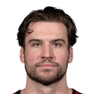

Corey Kispert:
“This is going to be year five for me now and I feel like a veteran on this team even though I'm really not. I feel old, but then you bring a guy like Marcus or a guy like CJ or Khris Middleton into our locker room like just their presence, everyone kind of like tightens up. So it's only a good thing for them only good thing for us to have them in our locker room.”

Corey Kispert on Khris MiddletonYouTube